VIPER vs MVP : Une analyse architecturale comparative
Structure et Principes Fondamentaux
Le Model-View-Presenter (MVP) représente l'un des patterns architecturaux précurseurs de la séparation des responsabilités en développement iOS. Comparons sa structure et ses approches avec le pattern VIPER.
Exemple d'Implémentation MVP
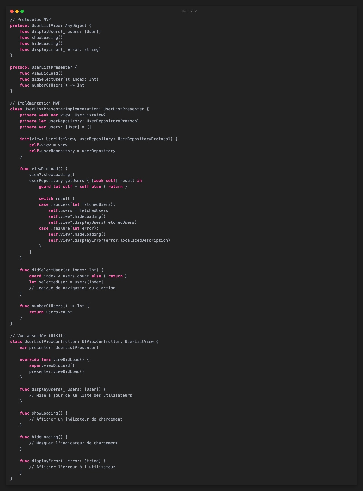
Exemple VIPER pour Comparaison
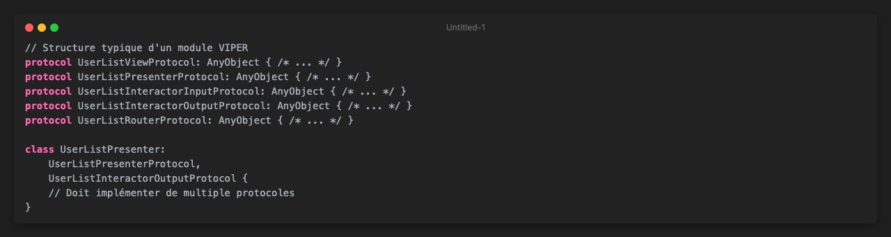
Analyse Comparative Approfondie
1. Structure et Complexité
MVP :
- Structure plus simple avec trois composants principaux
- Moins de protocoles et de classes
- Communication directe entre Presenter et View
- Overhead architectural minimal
VIPER :
- Cinq composants distincts (View, Interactor, Presenter, Entity, Router)
- Multiplication des protocoles
- Communication indirecte et découplée
- Overhead architectural significatif
2. Séparation des Responsabilités
MVP :
- Le Presenter gère la logique de présentation et une partie de la logique métier
- La View est responsable de l'affichage et de la capture des interactions
- Le Model représente les données et la logique métier
VIPER :
- Responsabilités strictement réparties entre cinq composants
- Interactor dédié à la logique métier pure
- Router gérant uniquement la navigation
- Presenter agissant comme un médiateur léger
3. Gestion de la Logique Métier
MVP :
- Logique métier souvent concentrée dans le Presenter
- Risque de surcharge du Presenter
- Moins de séparation claire entre logique métier et logique de présentation
VIPER :
- Séparation claire avec l'Interactor dédié à la logique métier
- Interactor complètement indépendant de la vue et du cycle de vie de l'interface
- Facilite l'isolation et les tests de la logique métier
4. Testabilité
MVP :
- Testabilité correcte
- Presenter peut être testé unitairement
- Dépendances directes plus difficiles à mocker
VIPER :
- Testabilité optimale
- Chaque composant peut être testé indépendamment
- Protocoles facilitant la création de mocks
- Injection de dépendances plus claire
5. Flexibilité et Évolutivité
MVP :
- Adaptabilité moyenne
- Limitation dans la gestion de cas complexes
- Risque de classes Presenter volumineuses
VIPER :
- Grande flexibilité
- Facilité d'ajout de nouvelles fonctionnalités
- Modularité poussée
- Scalabilité pour les applications complexes
Quand Choisir MVP ou VIPER ?
Choisissez MVP si :
- Votre projet est de taille petite à moyenne
- Vous recherchez une simplicité de mise en œuvre
- La logique métier est relativement simple
- Vous avez des contraintes de temps de développement
Choisissez VIPER si :
- Votre application est volumineuse et complexe
- Vous avez besoin d'une séparation stricte des responsabilités
- Les tests unitaires sont une priorité absolue
- Vous travaillez sur des projets nécessitant une grande évolutivité
Conclusion Comparative
MVP et VIPER représentent deux approches évolutives de l'architecture logicielle iOS, chacune avec ses forces et ses limites. MVP offre une simplicité et une rapidité de mise en œuvre, tandis que VIPER propose une séparation des responsabilités plus fine et une testabilité supérieure.
Le choix entre ces architectures dépend étroitement du contexte spécifique de votre projet : sa complexité, vos contraintes de développement, et vos objectifs à long terme. L'art du développement réside dans la capacité de choisir et d'adapter l'architecture qui maximise l'efficacité et la maintenabilité de votre application.## VIPER vs MVVM : Une comparaison architecturale approfondie
Structure et Philosophie
Pour comprendre véritablement les différences entre VIPER et MVVM, explorons leur structure et leur approche de la séparation des responsabilités.
MVVM : Une approche simplifiée et réactive
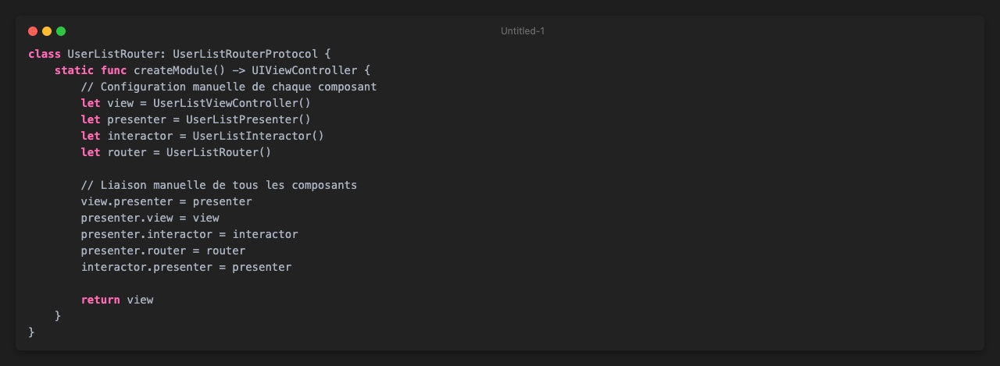
VIPER : Une décomposition plus granulaire
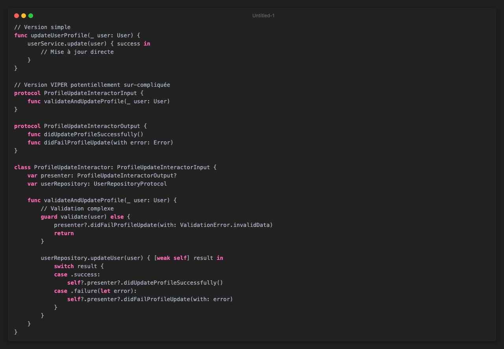
Analyse comparative détaillée
1. Complexité et Verbosité
MVVM :
- Structure minimale et concise
- Moins de protocoles et de classes
- Facilement compréhensible pour les développeurs débutants
VIPER :
- Multiplication des protocoles et des composants
- Configuration manuelle complexe
- Nécessite une compréhension architecturale plus approfondie
2. Séparation des Responsabilités
MVVM :
- Vue liée directement au ViewModel
- Gestion de l'état et de la logique métier dans le ViewModel
- Utilisation de mécanismes réactifs (Combine, RxSwift)
VIPER :
- Séparation stricte avec cinq composants distincts
- Chaque composant a une responsabilité unique et précise
- Communication via protocoles et délégation
3. Flexibilité et Évolutivité
MVVM :
- Adapté aux applications de taille moyenne
- Facilement extensible
- Moins de surcharge pour les fonctionnalités simples
VIPER :
- Optimal pour les applications complexes et volumineuses
- Facilite les tests unitaires
- Permet une modularisation poussée
4. Coût de Développement
MVVM :
- Moins de code à écrire
- Mise en place rapide
- Courbe d'apprentissage plus douce
VIPER :
- Nécessite plus de temps de développement initial
- Configuration manuelle consommatrice de temps
- Overhead architectural significatif
Quand choisir MVVM ou VIPER ?
Choisissez MVVM si :
- Votre projet est de taille moyenne
- Vous privilégiez la rapidité de développement
- Vous utilisez des frameworks réactifs
- La complexité métier est modérée
Choisissez VIPER si :
- Votre application est volumineuse et complexe
- Vous avez besoin d'une séparation stricte des responsabilités
- Les tests unitaires sont une priorité
- Vous travaillez sur des projets avec des équipes importantes
Conclusion
MVVM et VIPER représentent deux approches différentes mais complémentaires de l'architecture logicielle iOS. Le choix dépend étroitement du contexte spécifique de votre projet, de sa complexité et des contraintes de votre équipe.
L'essentiel est de comprendre les forces et les limites de chaque approche, et de les adapter intelligemment à vos besoins spécifiques. Il n'existe pas de solution universelle, mais plutôt des choix stratégiques qui alignent architecture technique et objectifs métier.# iOS Clean Architecture : Implémenter le pattern VIPER dans vos applications
Introduction à VIPER
VIPER est un pattern architectural avancé pour iOS qui pousse les principes de séparation des responsabilités à un niveau supérieur par rapport au traditionnel MVC (Model-View-Controller). Son nom est un acronyme qui décrit ses composants principaux :
- View : Interface utilisateur
- Interactor : Logique métier
- Presenter : Préparation des données pour l'affichage
- Entity : Modèles de données
- Router : Gestion de la navigation entre écrans
Anatomie d'un module VIPER
Composant View
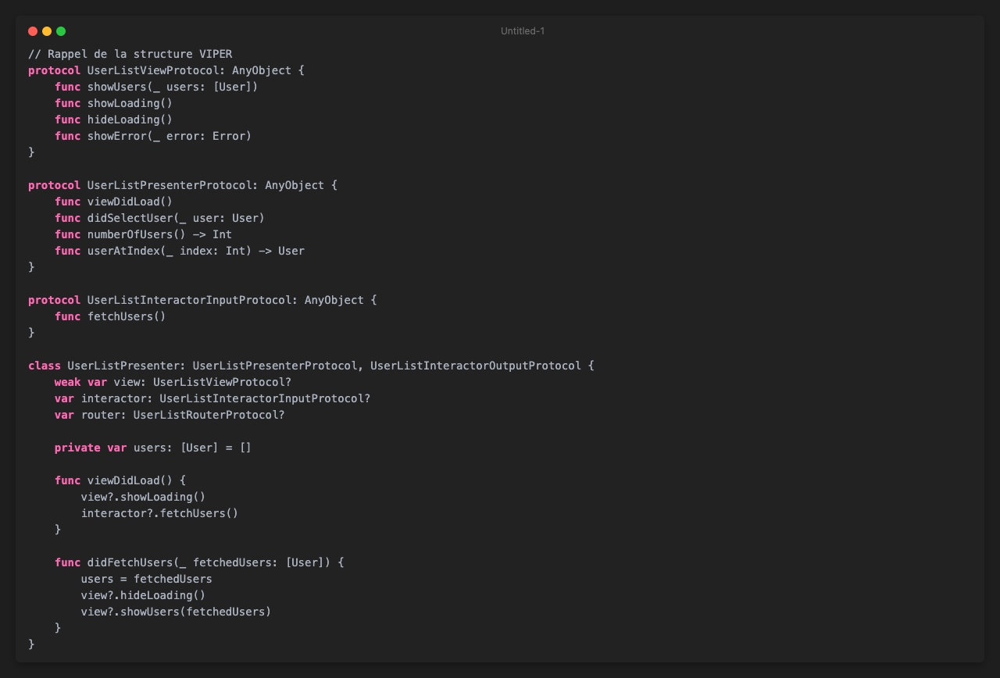
Composant Interactor
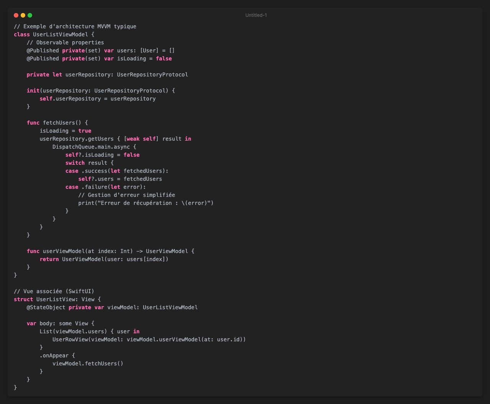
Composant Presenter
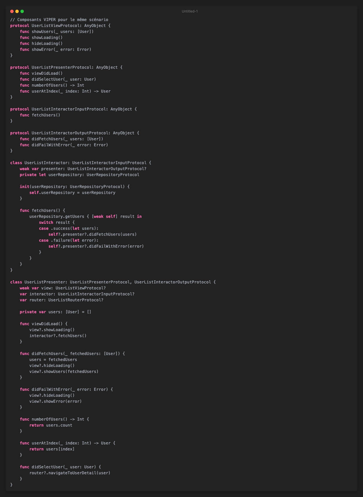
Composant Router
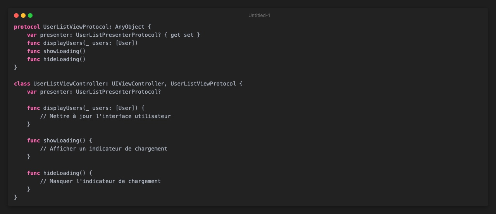
Avantages de VIPER
-
Séparation claire des responsabilités
- Chaque composant a une tâche précise et bien définie
- Facilite la maintenance et les tests unitaires
- Réduit la complexité des composants individuels
-
Testabilité améliorée
- Chaque module peut être testé indépendamment
- Les protocoles facilitent la création de mocks pour les tests
- Permet une couverture de test plus complète
-
Réutilisabilité du code
- Les composants sont faiblement couplés
- Possibilité de réutiliser des interacteurs et des routeurs dans différents modules
-
Scalabilité
- Structure adaptée aux applications de grande envergure
- Facilite l'ajout de nouvelles fonctionnalités
Inconvénients de VIPER : Une analyse approfondie
1. Complexité initiale et overhead architectural
VIPER introduit une complexité significative qui peut devenir un fardeau pour les projets de petite et moyenne envergure. Prenons un exemple concret :
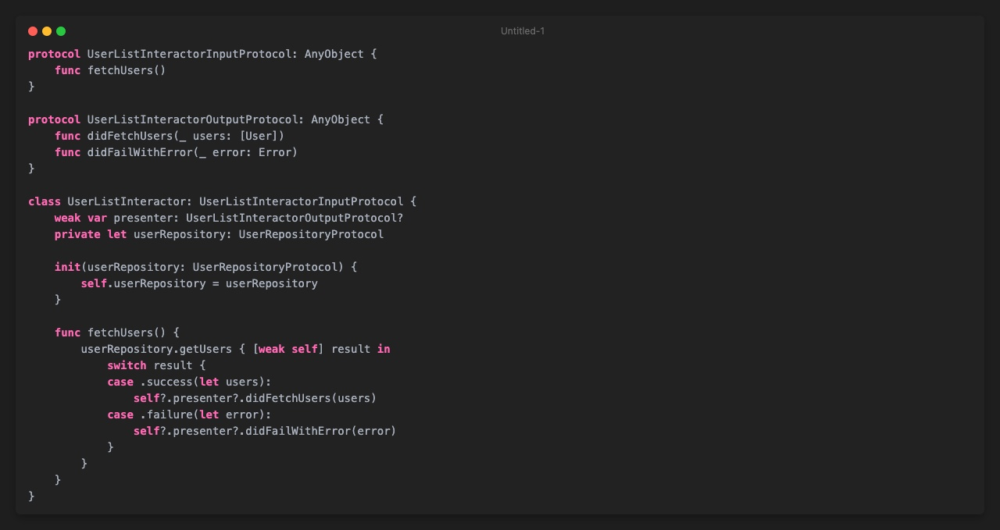
Dans cet exemple, on voit clairement que VIPER nécessite significativement plus de code pour réaliser la même tâche. Pour un écran simple, cet overhead peut sembler disproportionné.
2. Surcharge de protocoles et verbosité
La multiplication des protocoles crée non seulement du code supplémentaire, mais introduit également une complexité cognitive. Considérez cette situation typique :
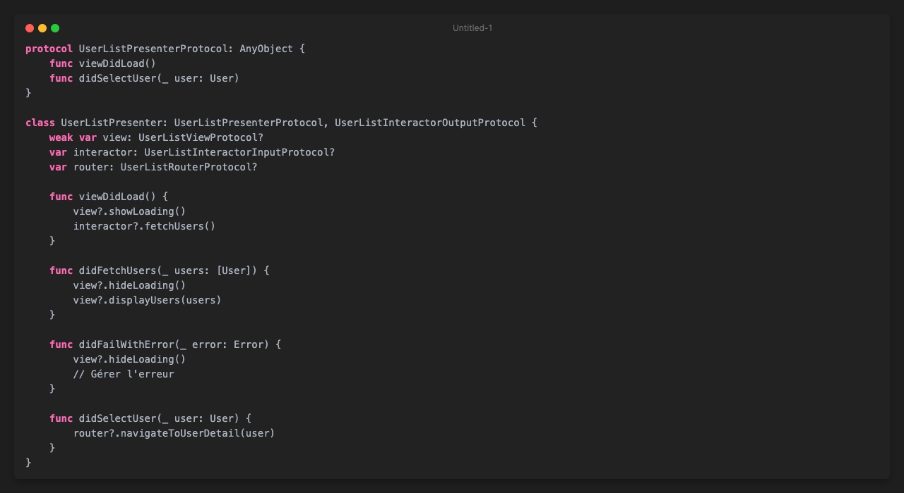
Chaque nouvelle fonctionnalité devient un exercice d'implémentation de protocoles multiples, augmentant la complexité et le temps de développement.
3. Configuration manuelle fastidieuse
L'assemblage des modules VIPER est particulièrement laborieux. Voici un exemple de la configuration manuelle nécessaire :
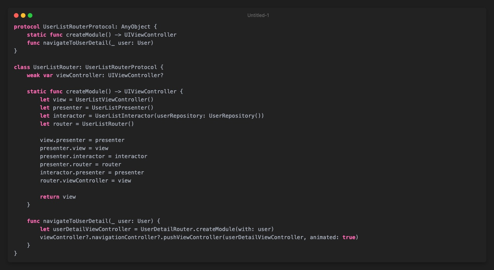
Chaque module nécessite cette configuration répétitive, ce qui devient rapidement fastidieux et source d'erreurs potentielles.
4. Risque de sur-ingénierie et complexité inutile
VIPER peut facilement conduire à la création de couches d'abstraction superflues. Imaginons un scénario simple de mise à jour de profil utilisateur :
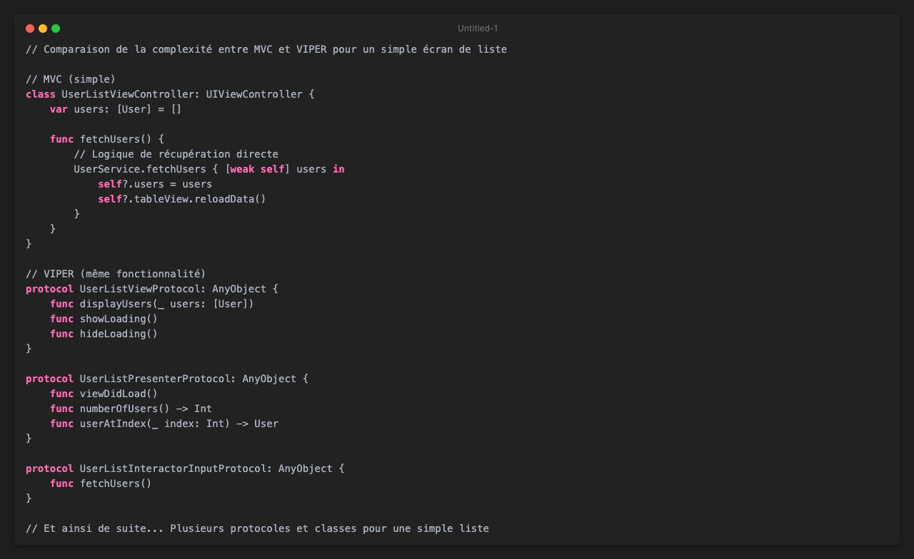
Dans cet exemple, une simple mise à jour devient un processus multicouche complexe, alors qu'une implémentation directe serait plus lisible et maintenable.
5. Overhead de performance
La multiplication des protocoles et des couches d'abstraction peut introduire un léger overhead de performance. Bien que minime, cela peut devenir significatif dans des applications nécessitant des performances critiques.
Conclusion sur les inconvénients
VIPER n'est pas une solution universelle. Son utilisation doit être soigneusement évaluée en fonction :
- De la complexité du projet
- Des compétences de l'équipe
- Des besoins spécifiques de l'application
Pour de nombreux projets, des architectures plus légères comme MVVM ou même MVC amélioré peuvent offrir un meilleur rapport complexité/bénéfices.
Quand utiliser VIPER ?
- Projets d'envergure avec des fonctionnalités complexes
- Applications nécessitant une maintenabilité à long terme
- Équipes ayant besoin d'une séparation claire des responsabilités
- Projets avec une forte composante de tests unitaires
Conclusion
VIPER représente une approche architecturale puissante pour les développeurs iOS qui cherchent à construire des applications modulaires, maintenables et testables. Bien qu'il introduise une certaine complexité, ses avantages en termes de séparation des préoccupations et de testabilité en font un choix attractif pour les projets d'envergure.
La clé est de l'utiliser judicieusement et de ne pas tomber dans le piège de la sur-ingénierie. Commencez progressivement, apprenez ses subtilités, et adaptez-le à vos besoins spécifiques.